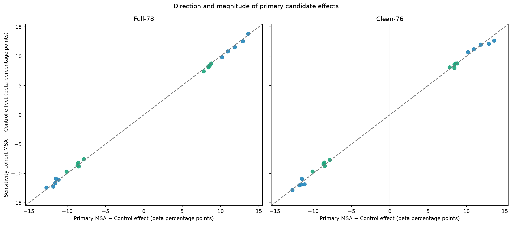
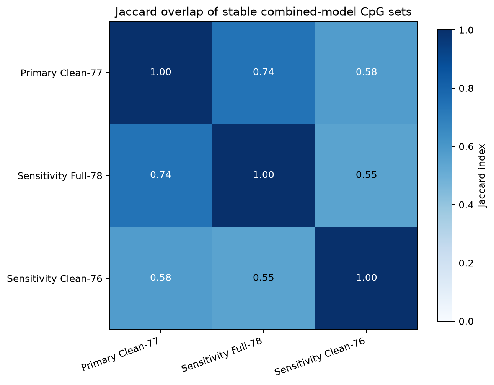

Design locked before review: only 5mC, 5hmC and combined molecular-plus-covariate models were re-estimated using the frozen Step 3 nested-CV folds. All molecular preprocessing and selection remained outer-training-only.
Interpretation: The two sensitivity cohorts overlap the primary cohort and are robustness analyses, not external validation. Candidate sensitivity support requires selection frequency ≥0.60 and matching mean-effect direction in both alternative cohorts. This threshold is descriptive and is not a p-value.
| cohort_label | donors | roc_auc_donor_mean_oof | roc_auc_bootstrap_low | roc_auc_bootstrap_high | pr_auc_donor_mean_oof | balanced_accuracy_donor_mean_oof | delta_roc_auc_vs_primary_clean77 |
|---|---|---|---|---|---|---|---|
| Primary Clean-77 | 77 | 0.6527 | 0.5345 | 0.7696 | 0.6941 | 0.5983 | 0.0000 |
| Sensitivity Full-78 | 78 | 0.7047 | 0.5840 | 0.8134 | 0.7362 | 0.6022 | 0.0520 |
| Sensitivity Clean-76 | 76 | 0.6847 | 0.5583 | 0.8042 | 0.6613 | 0.6472 | 0.0320 |

15 of 20 primary candidates met the prespecified sensitivity-support rule in both alternative cohorts.
| source_modality | cpg_id | gene_symbols | stability_tier | primary_selection_frequency | full78_selection_frequency | clean76_selection_frequency | primary_effect_direction |
|---|---|---|---|---|---|---|---|
| 5mC | cg05666820 | FZD9 | B_moderate_stability | 0.920 | 0.900 | 0.820 | MSA_lower |
| 5hmC | cg11778876 | RSL24D1 | A_high_stability | 0.860 | 0.820 | 0.920 | MSA_higher |
| 5mC | cg22190721 | ESRP2 | A_high_stability | 0.820 | 0.800 | 0.840 | MSA_lower |
| 5mC | cg14225168 | NOTCH1 | A_high_stability | 0.920 | 0.920 | 0.780 | MSA_higher |
| 5hmC | cg24800754 | MLLT1 | A_high_stability | 0.920 | 0.780 | 0.900 | MSA_lower |
| 5mC | cg01883408 | CCNI2 | A_high_stability | 0.800 | 0.740 | 0.920 | MSA_lower |
| 5mC | cg00944421 | ESRP2 | B_moderate_stability | 0.740 | 0.740 | 0.760 | MSA_lower |
| 5hmC | cg25938287 | MIR103A1;PANK3 | B_moderate_stability | 0.700 | 0.740 | 0.920 | MSA_higher |
| 5hmC | cg25681427 | MYO1B | B_moderate_stability | 0.680 | 0.720 | 0.780 | MSA_lower |
| 5mC | cg18705301 | NDUFAF1 | B_moderate_stability | 0.780 | 0.800 | 0.700 | MSA_higher |
| 5mC | cg07879897 | NaN | A_high_stability | 0.820 | 0.680 | 0.760 | MSA_higher |
| 5hmC | cg09165919 | MLLT1 | A_high_stability | 0.880 | 0.840 | 0.660 | MSA_lower |
| 5hmC | cg21185019 | RP5-1007M22.2 | B_moderate_stability | 0.620 | 0.660 | 0.720 | MSA_higher |
| 5hmC | cg02115067 | UST | B_moderate_stability | 0.680 | 0.640 | 0.720 | MSA_higher |
| 5mC | cg05765011 | ADCY9 | B_moderate_stability | 0.620 | 0.640 | 0.760 | MSA_higher |


| cohort_a | cohort_b | stable_set_a | stable_set_b | intersection | union | jaccard |
|---|---|---|---|---|---|---|
| primary_clean77 | sensitivity_full78 | 20 | 27 | 20 | 27 | 0.741 |
| primary_clean77 | sensitivity_no_MSA30_Control11_76 | 20 | 21 | 15 | 26 | 0.577 |
| sensitivity_full78 | sensitivity_no_MSA30_Control11_76 | 27 | 21 | 17 | 31 | 0.548 |

These results assess sensitivity to the inclusion or exclusion of MSA 30 and Control 11. They cannot establish generalization to a new brain bank or an independent cohort.